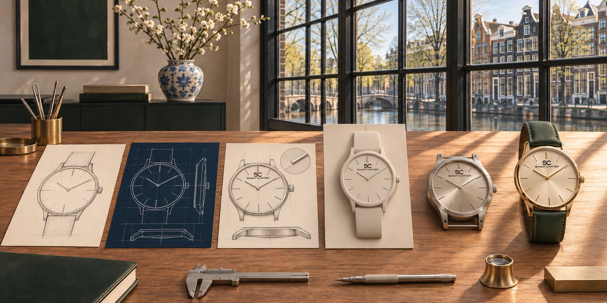

The Netherlands journey begins
According to his firsthand account, Rajan Mehta begins living and working in the Netherlands.
Our journey
A timeline separating public professional facts, the founder’s firsthand history and milestones still awaiting documentary detail.

According to his firsthand account, Rajan Mehta begins living and working in the Netherlands.
Professional experience in the watch category—including documented associations with Danish Design and Jacob Jensen—strengthens Rajan’s understanding of European design and international brand positioning.
Public profiles document Sandy’s BA in Illustration from Willem de Kooning Academy, Rotterdam.
Rajan’s firsthand account places the founding discussions with Sandy and Carter at Droog Amsterdam. No unsupported meeting date is assigned.
A SANDY D. CARTER application is filed in India in Class 14, identifying Rajan Mehta as applicant.
House Of Brands Fashion LLP is established in India, providing experience across development, sourcing, e-commerce and marketplace distribution.
SANDY D. CARTER prepares for its planned December India launch, with Myntra expected to play a role in the marketplace strategy.
Ambitions include the Netherlands, UAE, UK and a future Los Angeles office presence. These are not current operations.
The next chapter